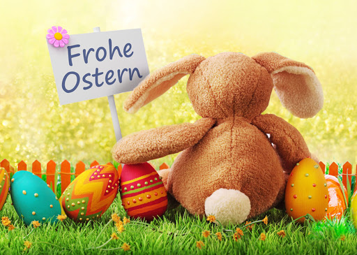

Bei dem Osterfest geht es um die Kreuzigung von Jesus Christus und um seine Auferstehung von den Toten. Es ist ein religiöses Fest. Ostern ist ein Fest im Frühling, aber der genaue Termin von Ostern richtet sich nach dem Mondkalender. Daher liegen die Ostertage von Jahr zu Jahr an verschiedenen Wochenenden.
Der erste Feiertag der Osterzeit ist der Karfreitag. Dieser Tag ist kein fröhlicher Tag. Er ist ein Trauertag, weil er an den Tod von Jesus Christus am Kreuz erinnern soll. Fröhliche Musikveranstaltungen sind daher an diesem Tag verboten.
Auf den Karfreitag folgen die Feiertage Ostersonntag und Ostermontag. An ihnen freut man sich über die Auferstehung von Jesus Christus aus seinem Grab. Die Wohnungen und Häuser werden zur Osterzeit festlich mit Zweigen und Blumen dekoriert. Am Ostersonntag gehen religiöse Familien in die Kirche. Danach folgt ein festliches Essen.

Für die Kinder gibt es an diesem Tag kleine Geschenke, Süßigkeiten und Ostereier. Das sind bemalte Hühnereier oder Eier aus Schokolade. In der Nacht vor dem Ostersonntag füllen die Eltern kleine Strohnester mit diesen Geschenken. Dann verstecken sie die Nester heimlich in der Wohnung oder im Garten. Die Kinder müssen die versteckten Ostereier am Ostersonntag suchen. Das ist ein riesiger Spaß für die ganze Familie. Den Kinder wird bei dieser Gelegenheit erzählt, dass die Osternester von einem Osterhasen versteckt wurden. Manche Familien nutzen die Osterzeit, um zu verreisen, weil es in dieser Zeit Schulferien gibt.
Ostergrüße, lauter Texte und Bilder, für herzliche Wünsche per Post, Email und SMS, Whatsapp... kannst du bei uns ganz sofort finden. Schnell und unkompliziert geht das Senden der Grüße per Whatsapp, Facebook usw. Dennoch hat der Klassiker nicht ausgedient, die gute altbekannte Glückwunschkarte, für die wir hier auch verschiedene Textbeispiele liefern.
Sind Grüße zu Ostern überhaupt noch alltagstauglich? Aber natürlich. Gerade zu so einem wichtigen Fest, welches im Frühjahr gefeiert wird, sind gute Wünsche durchaus angebracht. Ob du nun private oder geschäftliche Grüße versendest, in jedem Fall wird sich der Empfänger darüber freuen, denn sie signalisieren, wie wichtig der Andere dir ist.
Bedenke auch, wie du dich mit geschäftlichen Osterwünschen von Anderen (der Konkurrenz) abheben kannst und dich so wieder in Erinnerung bringst. Solche preiswerten Kleinigkeiten, wie Grüße in Karten, Briefen oder der Email, bewirken oft sogar ganz Großes ;-)